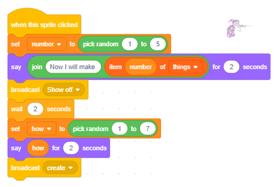

Списъци¶

В програмите, които създадохме в предишните уроци, използвахме само прости типове данни - всяка променлива запазваше стойността на една част от данните. Въпреки това често ни се налага да съхраняваме цял набор от данни под едно име, например набор от числа. Ако искаме да съхраняваме телефонни номера на 10 наши приятели, ще трябва да създадем 10 променливи, което не е лесно да се поддържа, така че ще използваме сложен тип данни, който в Scratch се нарича списък.
Какво е списък?
Списък е сложна променлива, която се състои от множество елементи - множество променливи. Това могат да бъдат различни видове данни; в този пример те са низове. Създава се подобно на това как се създават обикновени променливи.
В групата Променливи кликнете върху бутона Направете списък.
Ще се появи диалогов прозорец, където трябва да напишете името на списъка и да потвърдите, като щракнете върху бутона OK.

На сцената ще се появи празен монитор на списъка, а дъното на този монитор ще има текущата дължина на списъка, написана върху него, която ще бъде 0.
Щракването върху знака “+”, разположен в долния десен ъгъл, ще отвори полето, където можете да въведете първия си елемент, а дължината на списъка ще се увеличи с 1.
Първият елемент от списъка трябва да се въведе в празното поле.

Чрез повторение на този процес може да се въведе желаният брой елементи от списъка.
В същото време в палитрата с блокове ще се появи блок, свързан със списъка и 11 други блока, които позволяват списъка и неговите елементи да се използват в програмата.

 Разучи следните примери!¶
Разучи следните примери!¶
В проекта, наречен „Викторина“, има списък с въпроси и списък с верни отговори. Въпроси и отговори могат да бъдат въведени предварително или да бъдат качени от текстова база данни. Програмата задава въпросите на случаен принцип и след това проверява дали отговорът, даден от потребителя, е правилен. Ако отговорът е верен, потребителят ще получи точка, а ако не, програмата ще излъчи верния отговор. В крайна сметка въз основа на броя на правилните отговори, потребителят получава оценка.
Пример 1 - Проект “Викторина”¶
В този пример ще илюстрираме как може да се направи тест по математика. Тестът проверява дали участниците могат да определят най-големия общ делител за две или три числа. Въпросите са разположени в списъка Числа, а отговорите в списъка GCD (най-голям общ делител). Ще използваме променливата k, за да преминем през списъците, стойността на тази променлива се променя от 1 на 8 (броя на елементите в списъка) и ще съхраняваме броя на правилните отговори в променливата b.

Сценарият за този проект може да видите по-долу.

Следващият проект илюстрира как елементите на списъка могат да бъдат избрани на случаен принцип. Ще използваме репортерския блок, който ще върне стойността на елемента от списъка, чийто пореден номер е написан в съответното поле за въвеждане. По този начин, ако генерираме произволно променливата число, въвеждайки това число в полето за въвеждане на последователен номер, ще получим елемента, който е в тази позиция в списъка. Проектът също така илюстрира как произволно генерираните числа могат да бъдат използвани за излъчване на различни съобщения.
Пример 2 - Проект “Гла䔶
В този проект участват 10 спрайта - гладна котка и 9 вида храна, за която котката фантазира.

Котката върви наляво и надясно и “мисли” в продължение на 3 секунди едно от 11 изречения, избрани на случаен принцип, от списъка на изреченията, наречени храна.

През времето, когато облакът се вижда на сцената  , изображението на храната, за която котката мисли, се появява в белия облак, разположен в центъра на сцената.
, изображението на храната, за която котката мисли, се появява в белия облак, разположен в центъра на сцената.

Синхронизирането на появата на мисълта за храната и котката за тази конкретна храна ще бъде постигнато с излъчването на съобщения.
Променливата число, която се генерира на случаен принцип, се използва както за избор на изречението от списъка храна, така и за генериране на съобщението от „1“ до „11“. Никой не реагира на съобщенията “1” и “11”, докато спрайтове, чиито имена са числа между 2 и 9, ще реагират на съобщенията от “2” до “9”.
Например мишката, която е спрайт “2”, ще реагира на съобщение “2”, птицата, която е спрайт “3”, ще реагира на съобщение “3” и т.н.
{kind=link}
Реакцията на всеки спрайт е една и съща: те се появяват за 2 секунди, докато мислещият облак на котката се вижда и след това те се скриват отново. Когато щракнете върху зеления флаг, всички спрайтове (с изключение на котката) отиват в положение (0,110), което е центърът на белия облак, и те се скриват.
Следващата фигура съдържа всички скриптове, добавени към основния спрайт на този проект.
{kind=link}
Следващият проект илюстрира как можем да разделим всички обекти на групи от желани, нежелани и неутрални. Записът на желаните обекти се съхранява в един списък, а на нежеланите обекти - в друг. Когато обектът е избран, програмата първо проверява към коя група принадлежи: ако е желателно, ще се получат положителни точки, а ако е нежелателно, ще се получат отрицателни точки; ако е неутрален, броят точки няма да се промени. Например, това може да бъде стратегията, ако правите игра за деца, където те трябва да събират колкото се може повече полезни елементи и да избягват опасни предмети (вижте проектните задачи).
Пример 3 - Проект “Храна”¶
Сценарият на проекта
Основният спрайт на този проект е момиче на име Зара. По време на почивката в училище тя може да хапне нещо, да пие вода или да вземе подарък. Вие избирате какво ще вземе Зара, като кликнете върху обектите, които се появяват на сцената. Ако изберете храна за угояване - сандвич, чипс или поничка, ще получите отрицателни точки. Ако вместо това изберете плод - портокал, банан или ябълка, ще получите положителни точки. Ако решите да вземете вода или подаръка, точките ще останат непроменени.

Имената на артикулите, които печелят положителни точки, са в един списък (в нашия случай „плод“), а тези, които печелят отрицателни точки в другия (в нашия случай „нездравословен“).
Поведение на спрайтовете
Всички елементи имат едно и също поведение. Когато щракнете върху зеления флаг, те се появяват на произволно избраната позиция от дясната страна на сцената. Когато потребителят кликне върху тях, той присвоява името им на променливата храна, излъчва съобщението взето и скрива.

Сценариите, добавени към Zara, също позволяват на програмата да изчисли броя точки в зависимост от това коя храна е избрана.

Пример 4 - Проект “Clumsy Wizard”¶
Основният спрайт на тази игра е Clumsy Wizard. Той може да използва вълшебната си пръчка, за да направи няколко копия на едно и също нещо, но често се обърква и забравя точно колко е обещал, така че прави твърде много предмети или недостатъчно.
Има и неговият асистент, Wizard Girl, който следи отблизо какво е обещал Clumsy Wizard и колко копия е направил, като му напомня дали е направил грешка.

Как тромавият магьосник обещава различни неща
За да позволим на Clumsy Wizard да обещава да прави различни неща, ние трябва да създадем спрайт с тези неща като негови костюми. Освен това, ние трябва да съставим списък с имената на тези неща. В нашия проект ще създадем спрайт, наречен Creature, който може да се появи в 5 различни костюма.
{kind=link}
За да може Clumsy Wizard да изрече имената на костюмите, ние въведохме списък, наречен неща и в него въведехме 5 имена на костюми. Число между 1 и 5 се генерира на случаен принцип и тогава Clumsy Wizard казва изречение, в което текстът „Сега ще направя“ се съединява със съответния елемент от този списък. Например, ако се генерира номер 2, тромавият магьосник ще каже „Сега ще направя ябълки“, а ако се генерира номер 4, той ще каже „Сега ще направя пеперуди“.
Следващата фигура показва поведението на спрайта на съветника, когато потребителят кликне върху него. Първо, стойността на променливата число ще бъде генерирана на случаен принцип от интервала [1,5]. След това съветникът казва, че ще направи един от костюмите на спрайта * Creature , по-точно този, чийто пореден номер в списъка е същият като генерираното число. След това той излъчва съобщението *Show off, на което Wizard Girl ще реагира, като попита Clumsy Wizard колко копия на създанието, което възнамерява да направи, въпросът й ще продължи 2 секунди. Ето защо към магьосника е добавен блок, който му позволява да изчака 2 секунди. След тази пауза съветникът ще генерира стойността на променливата how от интервала [1,10]. Тъй като размерите на костюма на спрайт Creature са зададени на около 50x50 пиксела, решихме, че максималният брой създания, които могат да бъдат „създадени“ от Clumsy Wizard, трябва да е 10. По този начин всички копия ще бъдат видими на сцената. Clumsy Wizard казва колко копия ще създаде и излъчва съобщението create.
{kind=link}
Следващата фигура представя сценариите, които описват поведението на Момичето на магьосниците. Тя реагира и на двете съобщения, излъчвани от съветника, и излъчва собствено съобщение скрий 4 секунди след като получи съобщението създай. Съобщението скрий е сигналът за спрайта на съществото да премахне своите клонинги и себе си от сцената.

Следващата фигура представя скриптите, които описват поведението на спрайт Creature. Този спрайт реагира на 4 различни събития: щракване върху зеления флаг, излъчване на съобщенията create и скриване и събитието за клониране. Когато щракне върху зеления флаг, съществото се скрива и когато получи съобщението скрий, променя стойността на променливата следващ. Тази променлива, за разлика от глобалните променливи число и как, които могат да бъдат използвани от всички спрайтове, е създадена само за да бъде използвана от спрайта Creature, така че е локална променлива. Основната характеристика на локалните променливи е, че те могат да бъдат използвани само от спрайта, за който са създадени. Други спрайтове могат да видят своите стойности, но не могат да ги променят. Променливата next се използва като спусък. Когато стойността му се промени от 0 (начална стойност, която е зададена в началото на реакцията на съобщението create) до 1, унищожаването на клоновете (копия) започва и спрайтът се скрива.

Как Clumsy Wizard показва различния брой копия на спрайтове (клонинги)?
Още едно нещо, което трябва да обясним, е как Clumsy Wizard е в състояние да показва множество копия на определен спрайт (т.е. на костюми на спрайта Creature). За това той използва клонирането на спратите. Вече показахме, че спрайтът (и всички скриптове, добавени към него) може да бъде умножен по време на създаването на програмата. Умножението се извършва чрез избиране на опцията дубликат от менюто за бърз достъп, което получавате, когато щракнете с десния бутон върху спрайта в списъка с спрайтове. В Scratch има и опцията, която позволява спрайтът да се умножава по време на изпълнение на програмата. (Подобно е на списъците, към които елементите могат да се добавят както по време на създаването, така и при стартиране на програмата)
За да клонираме спрайта и да управляваме поведението на клона, използваме инструкциите  и
и  от групата Control. В сценария, описващ поведението на спрайта създание, когато получава съобщение на съветника create, спрайтът се появява в левия край на сцената, след което клоновете му се създават и се показват на сцената. Всеки клон се показва на разстояние 50 стъпки от предишния, така че те застават един до друг в редица. Това се постига с цикъла, който се повтаря how-1 брой пъти, който заедно с оригиналния спрайт генерира обещаните копия от спрайт-номера. Тъй като променливата next е локална променлива за спрайт, който се клонира, всеки от нейните клонове има своя собствена стойност на тази променлива и всички клонове са видими на сцената, докато променливата next не получи стойността 1 (когато спрайтът получава съобщението скрий). Това е, когато всеки клон се изтрие, а оригиналният спрайт се скрива.
от групата Control. В сценария, описващ поведението на спрайта създание, когато получава съобщение на съветника create, спрайтът се появява в левия край на сцената, след което клоновете му се създават и се показват на сцената. Всеки клон се показва на разстояние 50 стъпки от предишния, така че те застават един до друг в редица. Това се постига с цикъла, който се повтаря how-1 брой пъти, който заедно с оригиналния спрайт генерира обещаните копия от спрайт-номера. Тъй като променливата next е локална променлива за спрайт, който се клонира, всеки от нейните клонове има своя собствена стойност на тази променлива и всички клонове са видими на сцената, докато променливата next не получи стойността 1 (когато спрайтът получава съобщението скрий). Това е, когато всеки клон се изтрие, а оригиналният спрайт се скрива.

Надграждане на проекта Clumsy Wizard2
Идеята на тази надстройка е да се подреди така, че съветникът да не направи толкова копия на обекта, колкото обеща. Той прави или твърде много, или недостатъчно. Потребителят трябва да каже колко повече или по-малко обекти е създал магьосника, т.е. детето трябва да се научи да добавя и изважда числа до 10. Ние постигаме това чрез генериране на променливата грешка, чиито стойности могат да бъдат цели числа от интервала [ -3,3]. Разбира се, ако генерираната грешка е 0, съветникът ще създаде точния брой копия, които е обещал, но в други случаи ще е необходимо да се определи колко обекти е създал. Следващата фигура показва някои от случаите, когато съветникът се „обърка“.

Следващият сценарий описва поведението на създанието.

Сценарият, представен по-долу, описва поведението на Wizard Girl.

Запазете този модифициран проект под името Clumsy Wizard2.
Забележка. Ако проектът се използва за практикуване на добавяне и изваждане с числа до 10, ще бъде полезно да се вмъкне “празен” въпрос  в скрипта, добавен към съветника за младо момиче, вместо към блока за изчакване
в скрипта, добавен към съветника за младо момиче, вместо към блока за изчакване  . Само когато детето даде отговора, ще натиснем Enter и ще проверим този отговор.
. Само когато детето даде отговора, ще натиснем Enter и ще проверим този отговор.
 Отговори на следните въпроси¶
Отговори на следните въпроси¶
За всички следващи въпроси се приема, че първоначално списъкът има следните елементи:
{kind=link}
Въпрос 1¶
- списъкът ще има един по-малко елемент
- оранжевият елемент е на място номер 1 в списъка
- елементът се премества в края на списъка
- последният елемент от списъка е изваден
Q-43: Какъв е резултатът от изпълнението на командата  ? (Изберете всички верни отговори)
? (Изберете всички верни отговори)
Въпрос 2¶
- елементът ще бъде добавен в началото на списъка
- Тази команда добавя в края на списъка.
- елементът ще бъде добавен в края на списъка
- Правилно.
- елементът ще бъде добавен при условие, че преди не е бил в списъка
- Не се правят проверки.
Q-44: Какъв е резултатът от изпълнението на командата  ?
?
Въпрос 3¶
{kind=link}
Въпрос 4¶
Q-46: Коя команда ще постави елемента ягода на втората позиция в списъка плодове? (Изберете всички верни отговори)

Въпрос 5¶
Q-47: След изпълнението на кои команди ще се увеличи броят на елементите в списъка? (Изберете всички верни отговори)
Въпрос 6¶
- Ако списъкът включва ягода на елемента, неговият размер няма да се промени; в противен случай елементът ягода ще бъде добавен в края на списъка.
- Правилно.
- Независимо от това дали е включена или не ягода на елемента, тя ще я добави в края на списъка.
- Вписването в списъка се извършва, ако списъкът преди не е имал елемент ягода.
- Ако списъкът включва ягода на елемента, неговият размер няма да се промени; в противен случай елементът ягода ще бъде добавен в началото на списъка.
- Ако е добавен, ще бъде добавен в края на списъка.
Q-48: Какъв е резултатът от изпълнението на следните команди?

 Опитай!¶
Опитай!¶
В първите 3 упражнения се приема, че имаме списък, наречен оригинал, чиито елементи са числа от 1 до 10 (последователно).
Упражнение 1¶
Напишете скрипт, който създава списъка, наречен дубликат и записва в него всички елементи от съществуващия оригинален списък.
Упражнение 2¶
Напишете скрипт, който създава списък, наречен назад и запишете в него всички елементи от съществуващия списък оригинал в обратен ред, т.е. първият елемент от списъка назад трябва да бъде последният елемент на списъка оригинал, вторият - предпоследният от списъка оригинал и така нататък до първия елемент от списъка оригинал, който трябва да бъде последният в списъка назад.
Упражнение 3¶
Напишете скрипт, който създава списъка дори и записва в него всеки друг елемент от съществуващия списък оригинал.
Упражнение 4¶
Напишете скрипт, който създава списъка произволен1 и записва в него 10 числа от интервала [1,100], генериран с произволното число на оператора.
Упражнение 5¶
Напишете скрипт, който създава списъка random2 и записва в него 10 РАЗЛИЧНИ числа от интервала [1,100], генериран с произволното число на оператора.
 Отстранете грешката!¶
Отстранете грешката!¶
Грешка¶
Ученикът искаше да промени Пример 3 на този урок, така че да има нов списък, наречен изяден, където ще бъдат написани имената на различните видове храни, избрани от Zara. Към Zara той добави скриптовете за управление на движението, с клавиши, със стрелки и скрипта, показан на фигурата по-долу. Фигурата показва и скриптите, добавени към други спрайтове в проекта. Повечето от събитията бяха изпълнени според очакванията; ученикът обаче не успя да запише ябълката и портокала в списъка. Къде е бъгът?

Отговор:
В командата изчакайте до на скриптите, добавени към ябълката и оранжевите спрайтове, спрайтът, който трябва да ги докосне, не е зададен правилно.
 Обобщение¶
Обобщение¶
В този урок научихме как да използваме списъци в Scratch - типът данни, който има сложна структура, която позволява да се съхраняват множество стойности едновременно. Видяхме, че елементите на списъка могат да бъдат различни видове данни и че могат да бъдат използвани за избор на един от костюмите на определен спрайт или за избор на един от спрайтите от списъка на спрайтите. С примери за проекти също илюстрирахме синхронизирането на поведението на умножени спрайтове чрез използване на съобщения. Освен това показахме как програмата може да се използва за клониране на спрайтове и как тези клонинги могат да се държат различно, ако спрайтът, който ги е създал, има локални променливи.
Примери за проекти: 9Studio
Нови концепции: списъци, елементи на списъци, дублиакти.
Нови команди:  -
-  ,
,  ,
,  , , ,
, , ,  ,
,  ,
,  ,
,  ,
,  .
.
 - , , .
- , , .
 Създайте проект¶
Създайте проект¶
Проект 1 - “Тест за история”¶
Заредете списъка с въпроси от текстов файл.
С помощта на програмата Notepad напишете списък с въпроси за историята, всеки въпрос трябва да бъде написан в отделен ред.
Запишете текста като текстов файл, наречен History.txt, с кодирането UTF-8.
{kind=link}
В Scratch създайте списък, наречен въпроси.
Щракнете с десния бутон върху монитора на списъка и от менюто за бърз достъп изберете операцията import.

В полето за име на файл напишете История
Списъкът с въпроси, които сте писали по-рано в Бележника, ще се появи във вашия списък.

След това създайте списък с верни отговори и скрипт, който ще избира произволно въпрос от списъка с въпроси, помолете потребителя да отговори и след това сравнете отговора с правилния отговор от списъка. Ако потребителят отговори правилно, трябва да увеличите броя на точките му.
Проект 2 - “Телефонна книга”¶
Създайте три списъка с имена, рождени дни и телефонни номера на приятелите си. Напишете скрипт, който проверява дали името, въведено от входа, е включено в списъка. Ако името е в списъка, то трябва да показва датата на раждане и телефонния номер на лицето, чието име е въведено, и ако не, трябва да се покаже съответното съобщение.
Проект 3 - “Близнац蔶
Създайте процедури, които трябва да бъдат свързани в проекта Близнаци.
Процедурата ** Проверка ** трябва да провери дали числото, зададено като параметър, е просто число.
Процедурата Compose трябва да състави списък, наречен Prime, където ще запише всяко първо число от интервала [2,1000].
Основната програма трябва да показва всички двойни числа (прости числа, които се различават по 2) от интервала [2,1000].
Проект 4 - Игра “Опасни обект蔶
Създайте игра, в която потребителят (малко дете) трябва да избере няколко предмета, които не са опасни, от групата предложени му предмети. Имената (или поредните номера на костюмите, като в пример 4 от този урок) на опасните обекти на сцената трябва да бъдат записани в списъка опасен. Обектите се избират чрез щракване върху тях. Тогава програмата проверява дали този параметър е включен в списъка с опасности. Ако потребителят избере обект, който не е опасен, той / тя ще получи положителна точка; в противен случай той / тя ще получи отрицателна точка. Целта е да се съберат поне 3 точки (от например 5). Това е, когато играта трябва да приключи или потребителите трябва да преминат на следващото ниво.
Играта може да има множество нива, например опасности в кухнята (нож, купа с огън вряща вода и др.), Опасности в задния двор, природата и т.н.